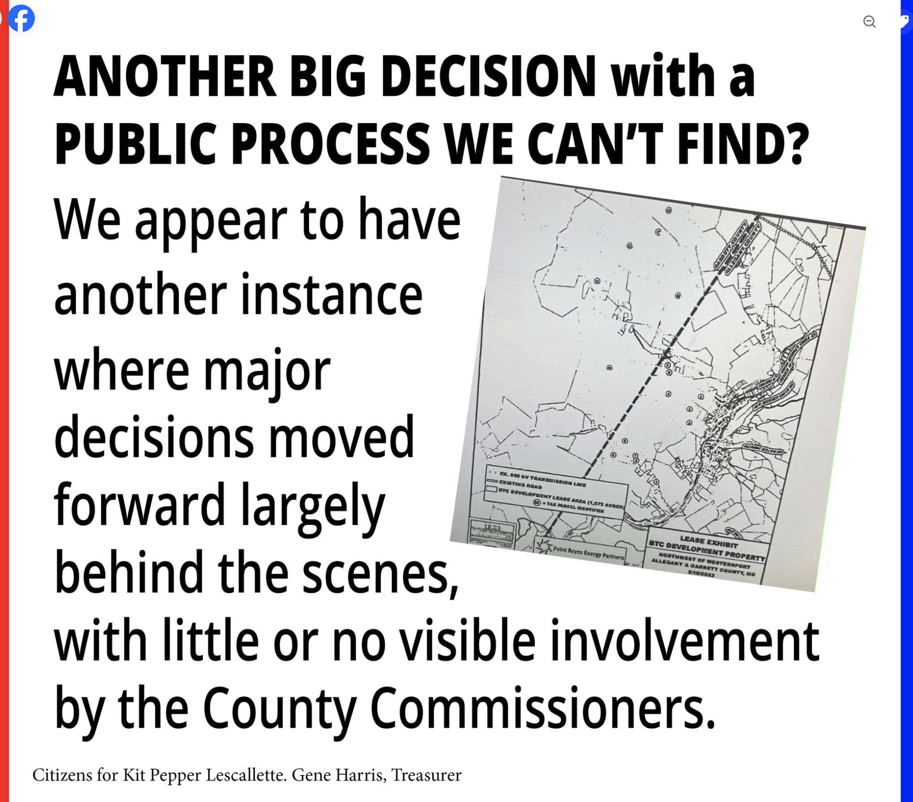

Notification and review
The PSC must notify the appropriate county governing body and provide the application for local review and comment.
Government Transparency and Development Decisions
We appear to have yet another instance where major decisions affecting Allegany County moved forward largely behind the scenes, with little or no visible involvement by the County Commissioners.
This time it involves another large solar project.
And let me be clear at the outset: Jade Meadow III may very well be a welcome project. It is being developed largely on reclaimed coal land, it represents a substantial private investment, and there may be very good reasons to support it.
That isn't the issue. The issue is whether the public can see how its elected County Commissioners reviewed and participated in major decisions affecting land use and development in Allegany County.
The central idea
State approval authority does not mean county government has no role.
Understanding the approval process
When residents first asked the Allegany County Commissioners to intervene in the proposed Cash Valley Road solar project, the response we heard repeatedly was essentially: "The State has preempted us. We can't vote a solar farm down."
There is some truth in that. The Maryland Public Service Commission has final authority to approve these generating facilities. But state preemption does not mean county government has no role.
Maryland Public Utilities Section 7-207 specifically builds county government into the process.
The PSC must notify the appropriate county governing body and provide the application for local review and comment.
The public hearing is to be conducted jointly with the county governing body unless that governing body declines to participate.
The PSC must give due consideration to county recommendations, applicable comprehensive plans and zoning, and efforts to resolve issues raised by the county.
So "the State has preempted us" was never the whole story.
The Cash Valley experience
Residents kept pushing. Eventually, when it became clear that opposition to the Cash Valley location crossed the usual political lines, including people who generally support solar energy, the Commissioners became involved.
Two commissioners appeared at the PSC hearing and opposed the location. The County subsequently participated in the contested proceeding.
In other words, Allegany County did have a voice. It waited until late in the process to use it.
That experience also highlighted the importance of reviewing county land-use priorities before the next major project arrives.
Planning before applications arrive
Allegany County's solar zoning provisions deserve another look. State law can ultimately preempt local zoning approval, but that does not make local zoning or the comprehensive plan meaningless in the PSC review process.
The County should examine what protections can legally be established before future development applications are filed.
Examine the County Code's provisions concerning setbacks, screening, site plans, decommissioning and other land-use considerations.
Consider agricultural land, important viewsheds, historic areas and communities where industrial-scale energy development may be inappropriate.
Review the County's longstanding goal of establishing Priority Preservation Areas and determine what work remains to identify and protect important land.
The time to establish land-use priorities is before somebody files the application.
Jade Meadow III
Jade Meadow III is a 300-megawatt solar project approved by the Maryland Public Service Commission. The project site is primarily in Garrett County near Westernport and Barton, with Allegany County parcels identified for easement purposes, including a possible overhead collector line.
There is nothing inherently improper about developers assembling land, negotiating leases or obtaining easements. Projects take years to assemble. And again, this may ultimately be a very good project.
But look at what happened from the perspective of the Allegany County public.

The documented PSC timeline
Jade Meadow III filed its CPCN application on December 20, 2024. The PSC docket contains a letter to the Allegany County Board of Commissioners dated March 3, 2025, and another communication to county governments dated May 22.
A public comment hearing was held at the George's Creek Library in Lonaconing on August 5, 2025.
On November 21, 2025, the Public Service Commission issued its final order granting the project a Certificate of Public Convenience and Necessity.
Public accountability
That is a lot of government activity, land-use activity and development activity. The PSC held a public hearing in Allegany County, but I cannot find a public record showing how our County Commissioners considered Jade Meadow III or decided what role the county would take.
Maybe those records exist. If they do, I want to see them.
Did the Commissioners intend to participate in the PSC process? If they declined to participate, when and how was that decision made?
Was the project discussed at a public meeting? Was there an agenda item, a vote or minutes documenting the discussion?
Did county planners or an appointed board review the proposal? What portion of the project was examined, and what recommendations, if any, were made?
I am not stating here that Jade Meadow III should have been rejected. I am asking that the County's involvement be visible and documented.
The county's responsibility
Maybe every decision made about Jade Meadow III was reasonable. Maybe the County had no objection at all. Maybe County planners reviewed it and concluded that the project posed no significant problem for Allegany County.
Fine. Then say that publicly.
A public process
Bring major development proposals to a Commission meeting. Explain what the project is, what portion is in Allegany County, what zoning applies and what the County can and cannot control.
Explain whether the Commissioners intend to participate in the PSC proceeding. Make whatever recommendation the elected Board believes is appropriate. And let the public hear the discussion.
The Commissioners do not have to oppose every project. They don't even have to oppose this project. But they do have to govern.
Cash Valley showed what Allegany County can do when its Commissioners choose to engage. Jade Meadow III raises a different question: Where is the public record of the County's participation?